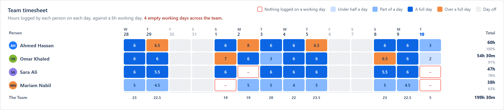
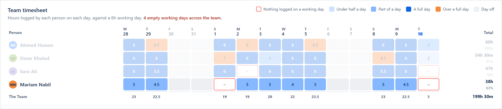
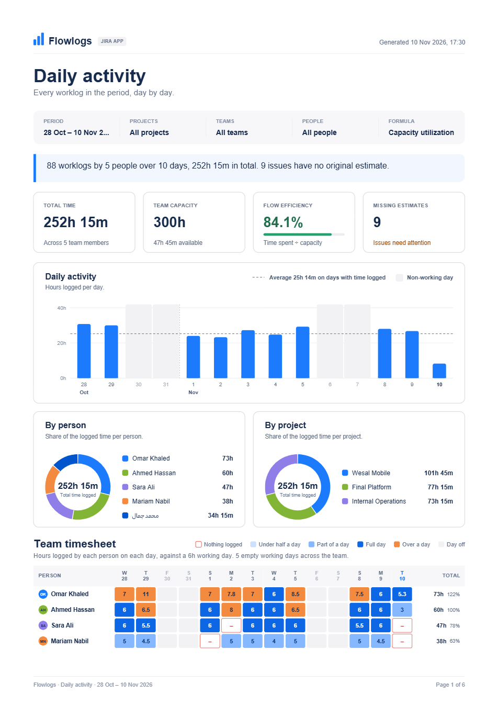
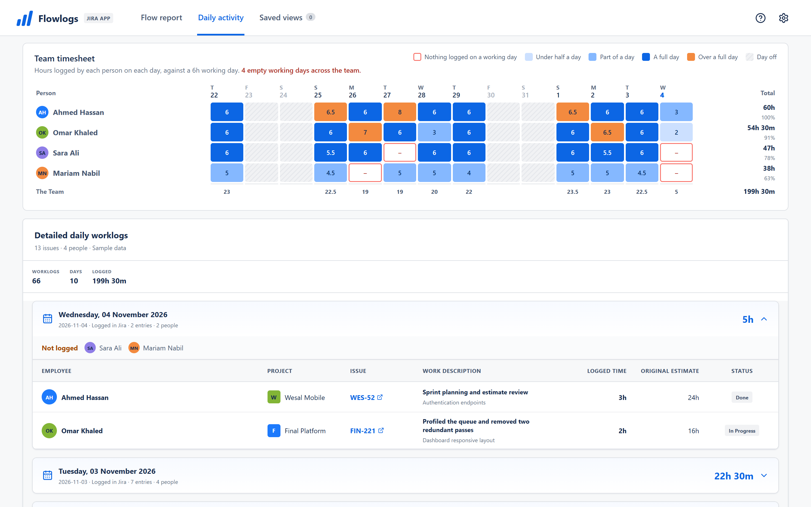
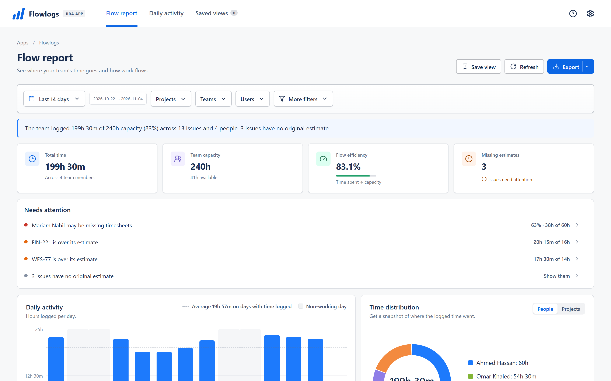
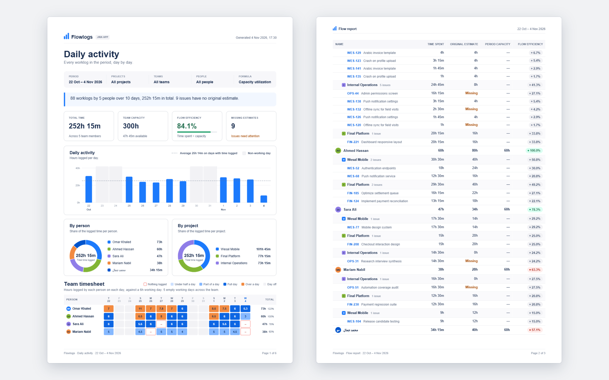

Flowlogs
JIRA CLOUD
Para Jira Cloud · Gratis
Los registros de trabajo que tu equipo ya lleva en Jira, convertidos en una hoja de horas del equipo, un informe de capacidad y un PDF listo para enviar. Sin configurar nada.
Detéctalo. Un día laborable sin horas registradas aparece con un borde rojo en la hoja de horas del equipo.
Actúa. Needs attention indica quién es y cuánto le falta para cubrir su capacidad.
Infórmalo. Con un clic, la misma imagen llega a la dirección en un PDF A4 limpio.
Funciona en Atlassian Forge · Ningún dato sale de Jira · Nombres en árabe en cada exportación
Gratis en el Marketplace
Sin licencias ni límite de usuarios
Lee los registros que ya hay en Jira
Sin doble registro
Los datos se quedan en Atlassian
Funciona en Atlassian Forge
Exportaciones listas para árabe
Los nombres se ven bien en PDF, Excel y CSV
Una hoja de horas que falta, de principio a fin
Un día laborable sin horas registradas aparece con un borde rojo en la hoja de horas del equipo.
Needs attention indica quién es y cuánto le falta para cubrir su capacidad.
Con un clic, la misma imagen llega a la dirección en un PDF A4 limpio.
Un día laborable sin horas registradas aparece con un borde rojo en la hoja de horas del equipo.
Needs attention indica quién es y cuánto le falta para cubrir su capacidad.
Con un clic, la misma imagen llega a la dirección en un PDF A4 limpio.




¿Te suena?
Abrir un perfil tras otro para saber quién olvidó registrar el trabajo de ayer.
Descargar archivos CSV y escribir fórmulas solo para comparar las horas registradas con la capacidad del sprint.
Comprometer trabajo sin saber quién va al límite ni qué incidencias superan su estimación.
Hoja de horas del equipo
Cada persona, cada día, coloreado frente a una jornada laboral. Un día sin nada registrado lleva un borde rojo, así sabes a quién recordárselo antes de la revisión del sprint. Haz clic en un día para ver los registros que hay detrás.


Informe de flujo
Tiempo total, capacidad y eficiencia de flujo arriba, una breve lista Needs attention debajo y cada cifra rastreable de la persona al proyecto y a la incidencia.
Compártelo
Un PDF A4 limpio con los gráficos y la hoja de horas, o Excel y CSV idénticos a lo que ves en pantalla. Nada que reformatear antes de enviarlo a la dirección.

Primeros pasos
Paso 1
Un administrador del sitio de Jira instala Flowlogs desde Atlassian Marketplace en pocos clics.
Paso 2
Flowlogs se abre desde el menú Apps de Jira. Sin cuentas ni contraseñas nuevas.
Paso 3
Los registros que tu equipo ya lleva en Jira llenan los informes, la hoja de horas del equipo y los gráficos.
Privacidad y arquitectura
Flowlogs funciona en Atlassian Forge y no envía nada a servidores fuera de Atlassian.
Cada persona ve solo los proyectos, incidencias y registros que sus permisos de Jira ya le permiten.
La configuración y las vistas guardadas se guardan en el almacenamiento de Atlassian Forge y en ningún otro sitio.
Sin servidores propios, sin analítica y sin scripts de seguimiento.
Los archivos PDF, Excel y CSV se crean en tu navegador y se guardan en tu dispositivo.
Elegir la herramienta adecuada
Cómo se compara Flowlogs con las exportaciones a hojas de cálculo y las suites completas de control de tiempo.
| Criterio | Flowlogs | Exportar a hojas de cálculo | Suites completas de control de tiempo |
|---|---|---|---|
| Puesta en marcha | Instalar y abrir | Exportación manual cada semana | Formación del equipo y nuevos hábitos |
| Coste | Gratis | Incluido en Office | Pago por usuario |
| Vista de hoja de horas del equipo | Integrada, con los días vacíos marcados | Fórmulas y tablas dinámicas | Un panel aparte |
| Capacidad frente a estimaciones | Calculado automáticamente | Búsquedas y fórmulas a mano | Modelos complejos integrados |
| Informe PDF | PDF A4 con un clic | Vista previa de impresión en Excel | Generador de informes personalizado |
| Aprobaciones y facturación | No incluido | No incluido | Aprobaciones y facturación a clientes |
Preguntas frecuentes
Sí. Flowlogs es gratis en Atlassian Marketplace, sin límite de usuarios.
No. Flowlogs funciona por completo en Atlassian Forge: su código se ejecuta en la nube de Atlassian, su configuración se queda en el almacenamiento de Forge y las exportaciones se crean en tu navegador.
En el día en que se registró en Jira, así que un informe de la semana pasada muestra exactamente lo que se introdujo la semana pasada. La capacidad sigue las horas por día y los días por semana que tú configuras.
Flowlogs lee Jira como la persona que lo usa, así que cada persona ve solo los registros e incidencias que Jira ya le muestra.
Los nombres y textos en árabe se muestran correctamente en pantalla y en cada exportación, incluido el PDF. La aplicación está en inglés; este sitio web también está disponible en árabe, español, francés y alemán.
Tu equipo no tiene que aprender nada nuevo. Flowlogs lee los registros que ya lleva en Jira.